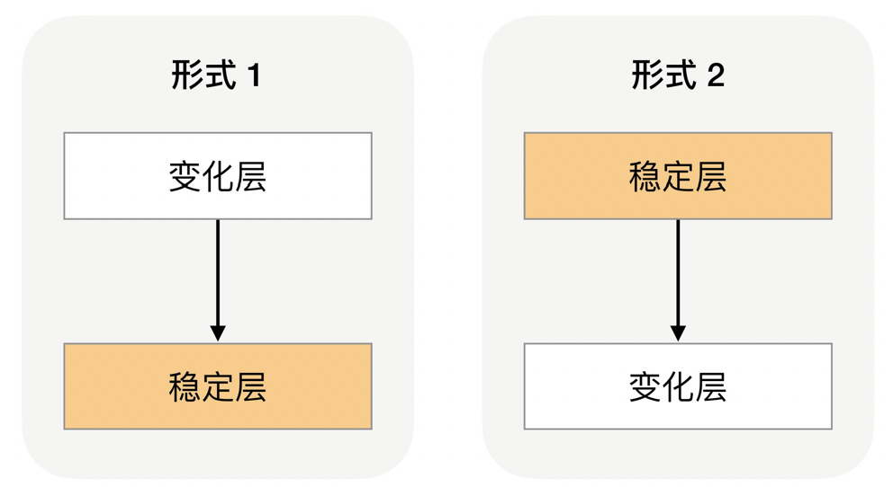
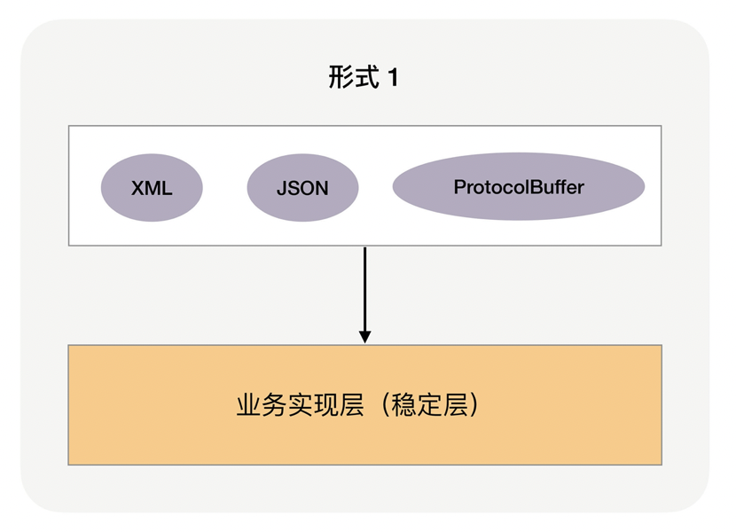
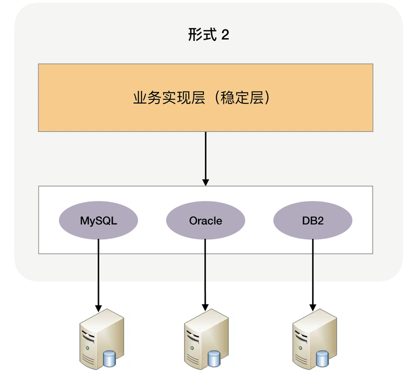
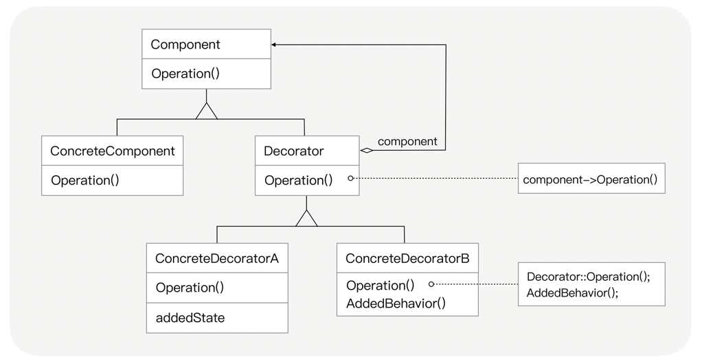

复杂度来源-可扩展性¶
Note
可扩展性指系统为了应对将来需求变化而提供的一种扩展能力，当有新的需求出现时，系统不需要或者仅需要少量修改就可以支持，无须整个系统重构或者重建。
由于软件系统固有的多变性，新的需求总会不断提出来，因此可扩展性显得尤其重要。在软件开发领域，面向对象思想的提出，就是为了解决可扩展性带来的问题；后来的设计模式，更是将可扩展性做到了极致。得益于设计模式的巨大影响力，几乎所有的技术人员对于可扩展性都特别重视。
设计具备良好可扩展性的系统，有两个基本条件:
1. 正确预测变化
2. 完美封装变化
但要达成这两个条件，本身也是一件复杂的事情
预测变化¶
Note
软件系统与硬件或者建筑相比，有一个很大的差异：软件系统在发布后还可以不断地修改和演进，这就意味着不断有新的需求需要实现。
架构师每个设计方案都要考虑可扩展性，尝试预测变化。“预测” 这个词，本身就暗示了不可能每次预测都是准确的，如果预测的事情出错，我们期望中的需求迟迟不来，甚至被明确否定，那么基于预测做的架构设计就没什么作用，投入的工作量也就白费了。
预测变化的复杂性在于:
不能每个设计点都考虑可扩展性
不能完全不考虑可扩展性
所有的预测都存在出错的可能性
Note
对于架构师来说，如何把握预测的程度和提升预测结果的准确性，是一件很复杂的事情，而且没有通用的标准可以简单套上去，更多是靠自己的经验、直觉，所以架构设计评审的时候经常会出现两个设计师对某个判断争得面红耳赤的情况，原因就在于没有明确标准，不同的人理解和判断有偏差，而最终又只能选择一个判断。
应对变化¶
Note
即使预测很准确，如果方案不合适，则系统扩展一样很麻烦。
应对1: 剥离”变化层”和”稳定层”¶

Note
此方案是将 “变化” 封装在一个 “变化层”，将不变的部分封装在一个独立的 “稳定层”。
如果系统需要支持 XML、JSON、ProtocolBuffer 三种接入方式，那么最终的架构就是上面图中的 “形式 1” 架构，也就是下面这样:

上面是变化层，下面是稳定层¶
如果系统需要支持 MySQL、Oracle、DB2 数据库存储，那么最终的架构就变成了 “形式 2” 的架构了

上面是稳定层，下面是变化层¶
此种应对会带来两个主要的复杂性相关的问题:
1. 系统需要拆分出变化层和稳定层
对于哪些属于变化层，哪些属于稳定层，很多时候并不是像前面的示例（不同接口协议或者不同数据库）那样明确，
不同的人有不同的理解，导致架构设计评审的时候可能吵翻天。
2. 需要设计变化层和稳定层之间的接口
接口设计同样至关重要，对于稳定层来说，接口肯定是越稳定越好；
但对于变化层来说，在有差异的多个实现方式中找出共同点，
并且还要保证当加入新的功能时原有的接口设计不需要太大修改，这是一件很复杂的事情。
例如，MySQL 的 REPLACE INTO 和 Oracle 的 MERGE INTO 语法和功能有一些差异，
那存储层如何向稳定层提供数据访问接口呢？
是采取 MySQL 的方式，还是采取 Oracle 的方式，还是自适应判断？
如果再考虑 DB2 的情况呢？
现在就已经能够大致体会到接口设计的复杂性了。
应对2: 提炼出”抽象层”和”实现层”¶
Note
抽象层是稳定的，实现层可以根据具体业务需要定制开发，当加入新的功能时，只需要增加新的实现，无须修改抽象层。这种方案典型的实践就是『设计模式』和『规则引擎』。
Important
设计模式的核心就是，封装变化，隔离可变性

设计模式——装饰者模式的类关系图¶
这个规则包括几部分:
1. Component 和 Decorator 类
2. Decorator 类继承 Component 类
3. Decorator 类聚合了 Component 类
这个规则一旦抽象出来后就固定了，不能轻易修改。
Note
规则引擎和设计模式类似，都是通过灵活的设计来达到可扩展的目的，但 “灵活的设计” 本身就是一件复杂的事情
其他¶
一个具备良好可扩展性的架构设计应当符合开闭原则:
对扩展开放，对修改关闭。
衡量一个软件系统具备良好可扩展性主要表现但不限于:
1. 软件自身内部方面。
在软件系统实现新增的业务功能时，对现有系统功能影响较少，即不需要对现有功能作任何改动或者很少改动。
2. 软件外部方面。
软件系统本身与其他存在协同关系的外部系统之间存在松耦合关系，
软件系统的变化对其他软件系统无影响，其他软件系统和功能不需要进行改动。
在实际工作场景中的解决方案:
常通过以下技术手段实现良好的可扩展性:
1. 使用分布式服务 (框架) 构建可复用的业务平台
利用分布式服务框架 (如 Dubbo) 可以将业务逻辑实现和可复用组件服务分离开，
通过接口降低子系统或模块间的耦合性
2. 使用分布式消息队列降低业务模块间的耦合性
利用分布式消息队列(如 RabbitMQ)将消息生产和消息处理分离开来
分层最有用，代码中用设计模式，如果后面接手的人不懂或者理解不到位，最后改的代码简直没法理解，还不如面向过程
《淘宝产品十年事》，里面讲需求的各种变化
Important
设计模式是代码的可扩展性，架构的可扩展性和设计模式关系不大
单一职责一般用在编码层面，用来指导类设计，用于架构层面的话，很难明确 “单一” 的粒度。例如，到底 “用户管理”（包括登录注册信息管理）是单一职责，还是 “用户登录” 是单一职责，看起来都可以。